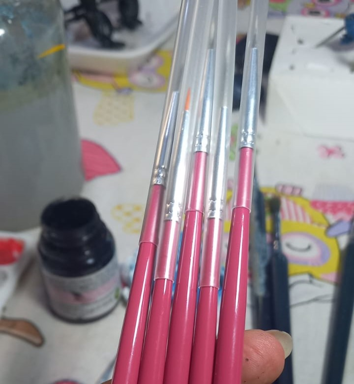

Materiais Essenciais
Para iniciar no universo da pintura de miniaturas, precisamos de alguns materiais que são essenciais nesta nova jornada pelo hobby
- Pincéis finos de precisão
- Tintas acrílicas
- Primer (spray ou pincel)
- Paleta úmida
- Álcool isopropílico (limpeza)
As tintas acrílicas são ideais para pintura de miniaturas, pois permitem um acabamento uniforme na peça, e permite que os efeitos e detalhes sejam melhor trabalhados durante a finalização.
O primer é utilizado como uma preparação da miniatura, antes da aplicação da tinta. Essa preparação garante que a tinta possa aderir de forma mais uniforme na peça, além de proteger o material. Primers podem ser aplicados em pincel ou por spray.
Um kit de pincéis com diferentes pontas para um iniciante pode fazer a diferença enquanto se trabalha na peça. Um pincél com a ponta arredondada pode ser utilizada para aplicar uma tinta base, após a aplicação do primer. Também é uma ótima pedida para a aplicação do drybrush. Após a preparação da base, o highlight e detalhamento deve ser feito com pincéis de pontas finas
Uma paleta úmida é uma excelente aquisição por permitir que, após realizar a preparação de uma certa quantidade de tinta, ela não seque durante o tempo que é utilizada. Durante detalhamentos a disponibilidade e consistência da tinta pode fazer a diferença de um bom acabamento.
Cada material tem seu papel na preparação e acabamento das miniaturas. Use bons produtos para melhores resultados.